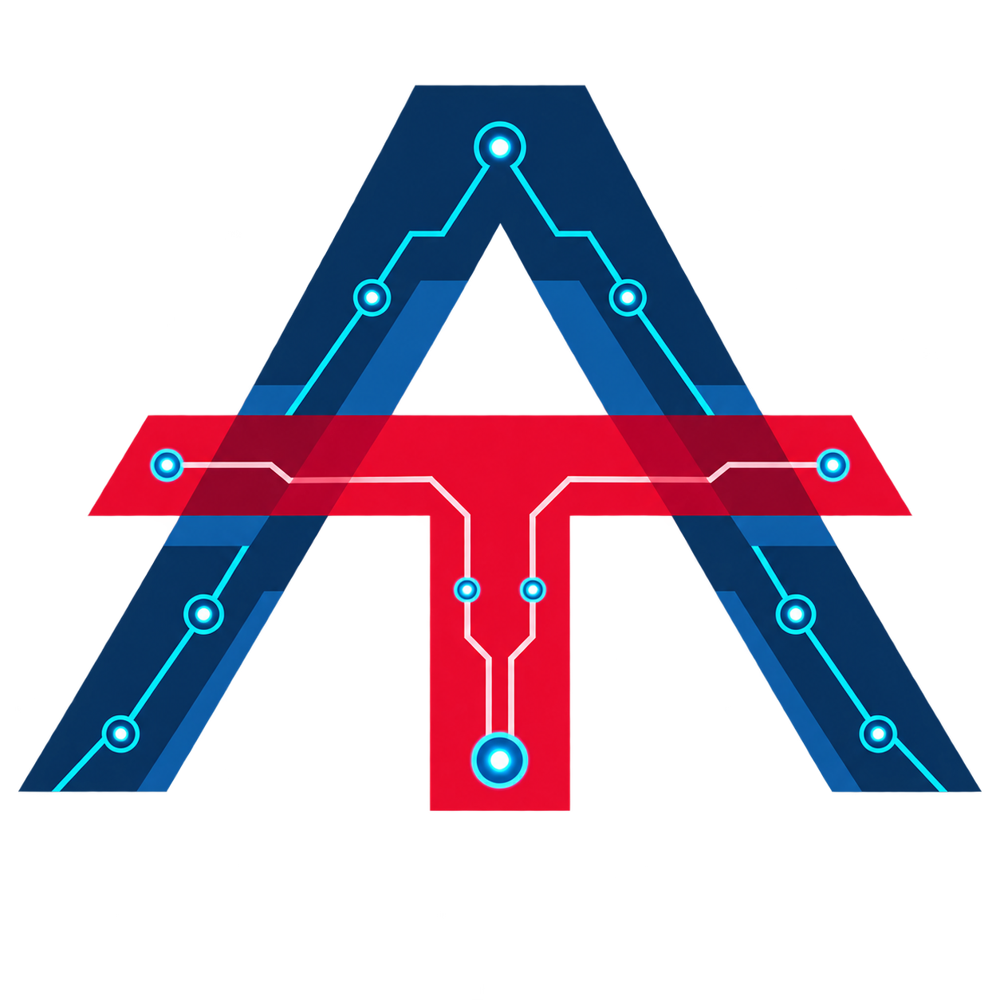

amir: My AI Portfolio

Production systems I shipped — rebuilt lean, so you can see the real stack … 🤓
apps/ 📊
Deployable UIs and CLIs (may depend on libs/* only).
Browse apps →libs/ 📦
Shared packages (kebab distro → nested import).
Browse libs →projects/ 🧬
Domain jobs and ingest CLIs (may depend on libs/* only).
Browse projects →services/ 🌐
Reserved for future network services.
Browse services →tools/ 🧰
Poe entrypoints, build helpers, and shared tool configs.
Browse tools →docs/ 📚
Landing hub plus the architecture portal.
Browse docs →